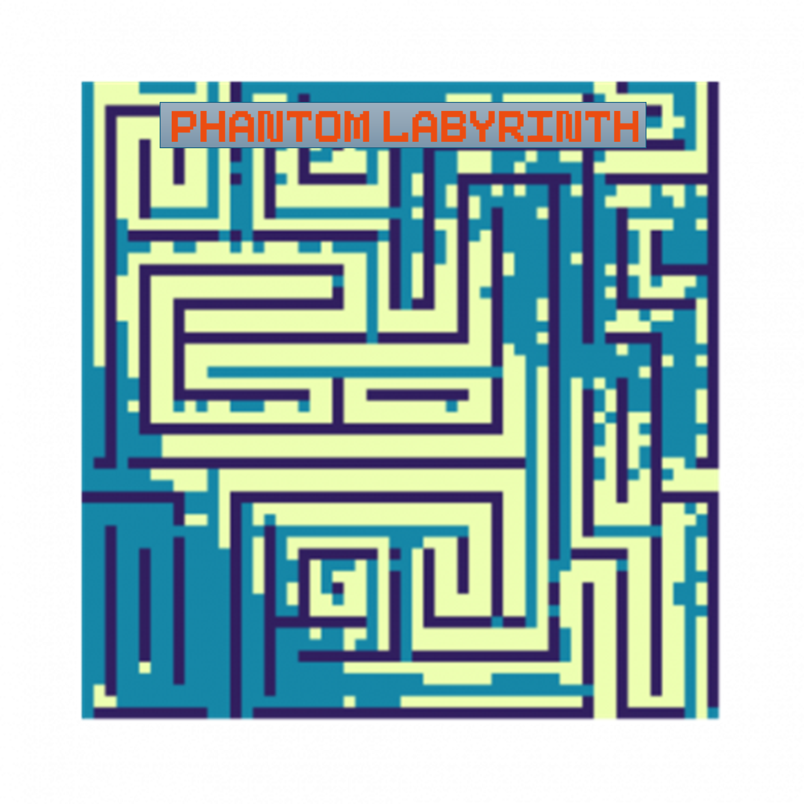
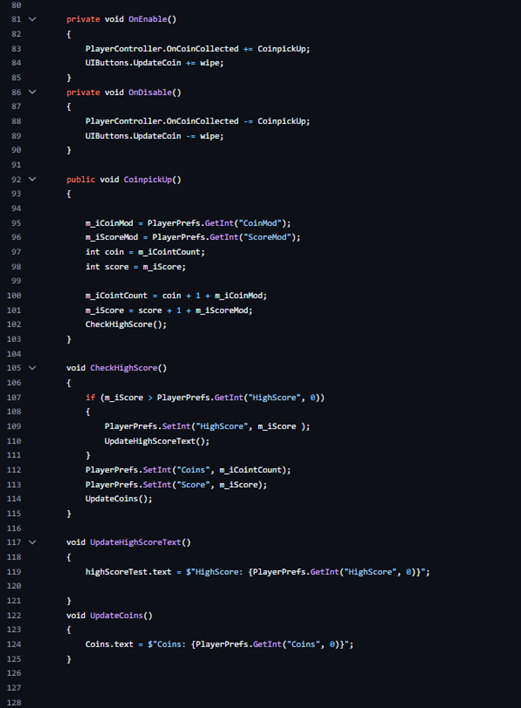

Mobile Game Development Project code
Game manager
The game manager will load the players data and will update UI elements in the game. The game manager will initialise Unity analytics. The game manager receives data through PlayerPrefs from other parts of the game like high score and coins that the player gained from playing the game. It will also get the data of what upgrades the player has bought and will apply them to the player when in level. Within the start function important data that is needed is loaded like the coin and score amount which will be uses to update the UI in game. The idea is that systems can get the information they need through the Game manager. For example when the player picks up a coin an event is triggered that is listened to by the manager so that the UI and other systems in the game know abut the update in amount by doing this it allows for a modifier to the coin or score pick up to be done when it is purchased in the shop.
Coin and Score system
The coins and score including the high score of the player will need to be displayed in the UI which is done by linking a text mesh pro that is in the UI to a text mesh variable in the game manger. When the player controller detects a coin pickup it triggers an event which will tell the game manager to increase the player coins and score and will also save this data using playerprefs which is a system in unity that will locally save data which will allow the score and number of coins to be saved between closing and opening the game again.
Enemy AI
The enemy AI needs to be able to find and move to the players position, to do this the use of a nav mesh will be used as it will allow the enemy to navigate throw a complex level and not get stuck and will move to the players position as the player will be the target position for the enemy. A nav mesh is generated which will tell what areas of the levels are walkable for the ai. Nav mesh’s new levels to be easily added and have the AI be able to navigate with just adding a few components to the level.
Energy System
The game will have an energy system, the player will have a certain amount of energy which will decrease when they play a level and energy will refill over time. The player will have the ability to buy more energy with coins or watch an ad to gain energy. Without energy the player cannot play a level. The function below will only start to refill the energy if it is below 5, the player can increase the energy past 5 by paying for energy in the show.

Missions and Daily Reward
The game will have daily missions that the player can complete to earn rewards like coins and abilities. New missions will be set daily, and the old missions will be removed. The player will gain a daily reward on the mission panel which will give the player coins on claiming it the player will need to wait 24 hours before claiming it again.

Analytics
For the game to gather analytics, implementation of Unity Analytics has been done which allows the set up of custom events, by using Unity analytics it allows data like how long the player is in the game from initial load to the game to be closed. Unity analytics allows for easy collection of data by creating a custom event with varible in the online dash board and then using AnalyticsService.Instance.CustomData("Start", parameters); With the name of the event you want to trigger with any data that event requires.
Cloud Saving
The game as the ability to save the players in game information like coin amount and Score amount. This is a limited implementation due to the use of Unity’s cloud saving system, even though it allows for quick saving and loading of game data on its own it means it can only send and receive information on the one device and don’t allow for data to transfer to another device for this functionality it requires google or Facebook integration. But what it does allow is a player to save there their game progress so if the game as an issue and the local data is lost they can load the cloud data. To send different data just use the “CloudSaveService.Instance.Data.ForceSaveAsync()” with the name of the data your sending and the data, and then it can be loaded by using CloudSaveService.Instance.Data.LoadAsync(new HashSet